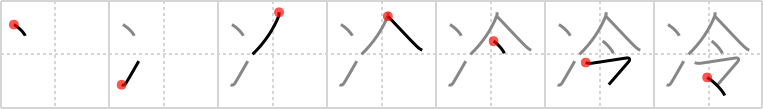

冷
← →
cool

Reading:
On-Yomi: レイ — Kun-Yomi: つめ.たい、ひ.える、ひ.や、ひ.ややか、ひ.やす、ひ.やかす、さ.める、さ.ます
Heisig story:
Ice . . . orders.
Koohii stories:
1) [samueruht] 31-1-2008(262): To keep your water cool, just order some ice.
2) [radical_tyro] 30-6-2007(67): The Japanese boss gives an order at the meeting: eat ice to stay cool (since they won't be running the air conditioning anymore).
3) [lerris] 4-7-2007(39): President Bush's drink isn't cool enough, and the Whitehouse is out of ice. "Time to invade Alaska!", President Bush says. "But sir… we already own it!".
4) [shaydwyrm] 23-6-2007(24): My superior says to me, "You need to cool off, and that's an order!" Just for emphasis, he dumps a bunch of ice cubes on my head.
5) [Elphalpo] 30-8-2008(6): Vanilla Ice orders you to stay cool.